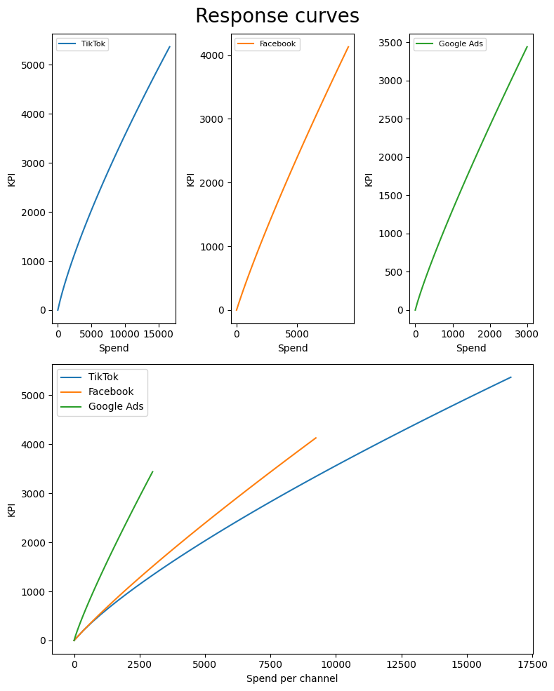

Projects

Media mix modeling can help us know how to best spend our money. High funnel tactics are an important part of the funnel
but how does that equate to dollars spent in the budget? LightweightMMM will help us work through this and show which
channels have the best return on investment.

Media attribution is an imnportant part of marketing. What paths are the users taking to conversion? What channels are
the most important in the user journey? Most of the time, you see last-touch or first-touch attribution. However, attribution can become
greatly more insightful and complex with alternative methods.
User and item-based collaborative filtering implemented in Python. This project uses the MovieLens dataset which has
100,000 ratings for 1682 movies.

Forecasting is a very applicable concept. This can be a useful start in predicting any desired KPI such as visitors, leads, or sales. My
implementation uses Python and the pmdarima library to perform forecasting.